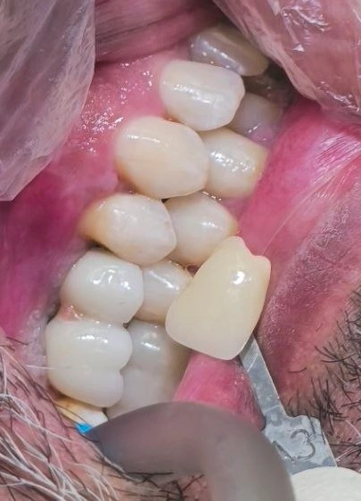

نسخه استخراجشده؛ ترجمه یا تأیید علمی انجام نشده است. وضعیت: captured
روکشهای ایمپلنت خلفی برای اصلاح به لابراتوار برگشتهاند، به دو دلیل: اولی رنگ بود، و دومی فرم کاسپ باکال. کاسپ باکال روکش نسبت به دندانهای مجاور کوتاه و نامتناسب درآمده و این کوتاهی در ناحیهای است که داخل لبخند دیده میشود. چه باید کرد؟

تا اینجا منطق ساختش قابل فهم است؛ فضا کم بوده و کاسپ کوتاه شده تا جا شود.
وقتی فضای اکلوزال تنگ است، کوتاهکردن کاسپ سادهترین راه است؛ اما اگر آن کاسپ در لبخند دیده شود، این سادگی به قیمت زیبایی تمام میشود.
مشکل اینجاست که این کاسپ در لبخند است؛ یعنی فرمش فقط یک جزء اکلوزال نیست، بخشی از زیبایی نهایی است. وقتی کاسپ باکال یک دندان قابل رؤیت کوتاهتر از دندانهای کناری باشد، چشم بلافاصله نامتناسبی را میگیرد. پس این فرم باید اصلاح شود، حتی اگر برای اصلاحش مجبور شوی سراغ دندان مقابل بروی.
فضای لازم برای بلندتر کردن کاسپ از اناملوپلاستی دندان مقابلِ سوپرااراپته تأمین میشود. تراش مختصر آنتاگونیست هم پلن اکلوزال را به سمت درست میبرد و هم اجازه میدهد کاسپ باکال فرم متناسب بگیرد. این بهتر از آن است که یک سازش زشت در ناحیهی لبخند ثابت شود.
مسیر تصمیم همان است: در ناحیهی زیبایی فرم کاسپ باکال را ثابت نگه دار و فضا را از سمت دندان مقابلِ سوپرااراپتهای بگیر که مقصر وضعیت موجود است، نه از کوتاهکردن کاسپی که در لبخند دیده میشود.